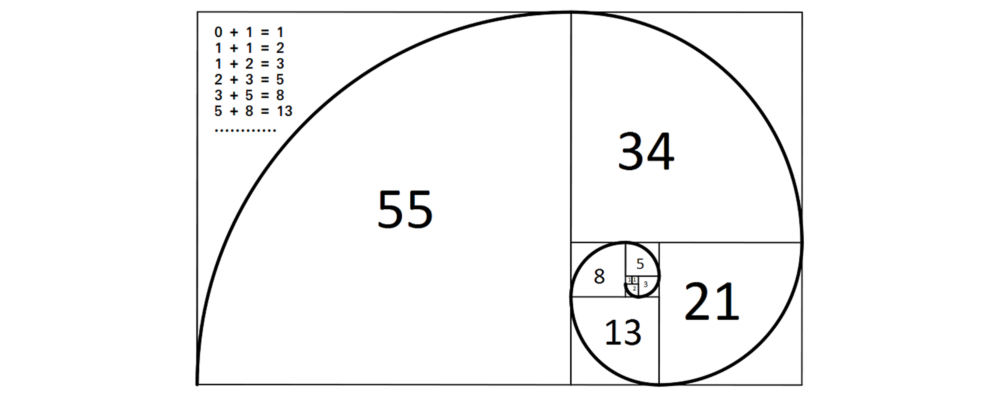
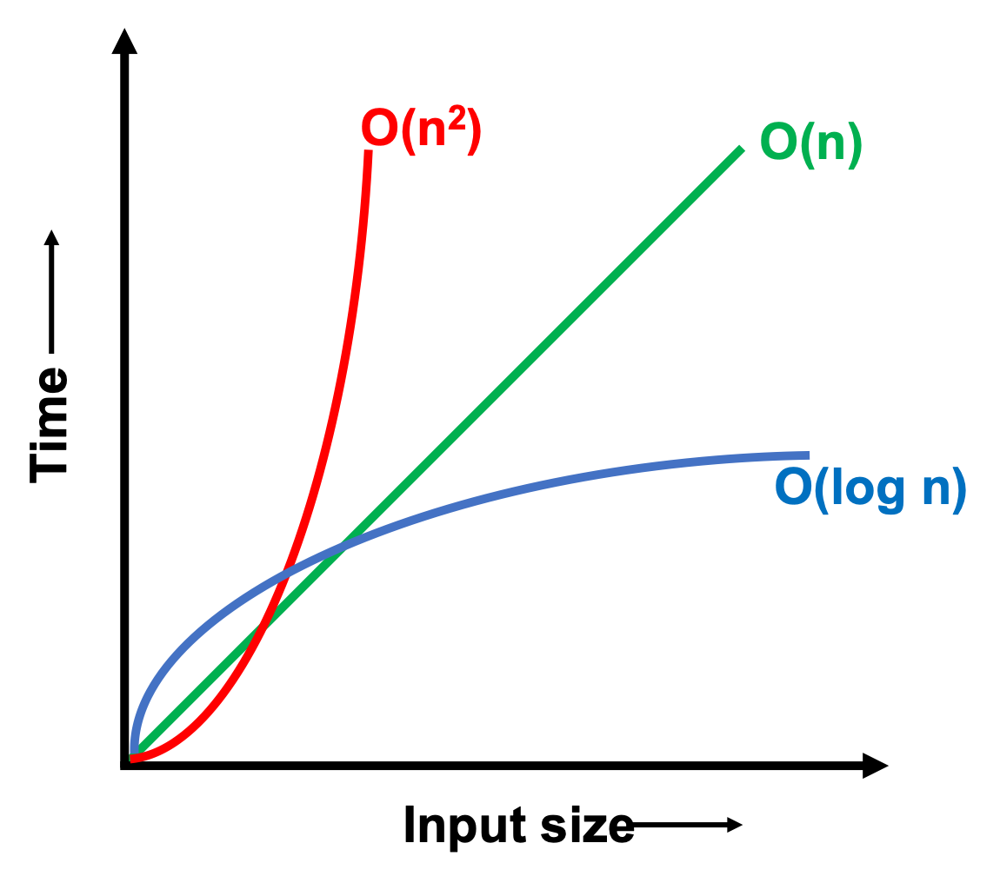
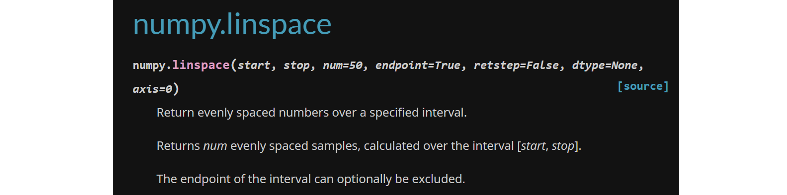
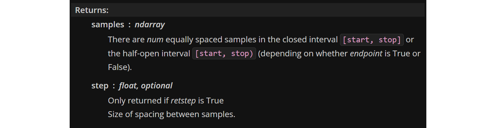

1. Aspectos generales de programación y algoritmos#
1.1. Complejidad de algoritmos#
1.1.1. ¿Qué es un algoritmo?#
Un algoritmo es una serie ordenada de operaciones sistemáticas que permite hacer un cálculo y hallar la solución de un tipo de problemas.
Por ejemplo:
def f(n):
out = 0
for i in range(n):
for j in range(n):
out += i*j
return out
La complejidad de un algoritmo es la relación entre el tamaño del input \(N\) y la cantidad de operaciones para completarlo. Una forma de determinar la complejidad del algoritmo es contabilizar las operaciones básicas:
sumas
restas
multiplicaciones
divisiones
asignación de variables
llamados a otras funciones
Por ejemplo, en el siguiente algoritmo:
def f(n):
out = 0
for i in range(n):
for j in range(n):
out += i*j
return out
El número de operaciones son:
sumas: \(N^2\)
restas: 0
multiplicaciones: \(N^2\)
divisiones: 0
asignación de variables: \(2N^2 + N + 1\)
llamados a otras funciones: 0
Así, el total de operaciónes para completar el algoritmo es \(4N^2+N+1\).
1.1.2. Notación Big-O#
A medida que el tamaño de \(N\) aumenta, las operaciones de mayor orden se hacen dominantes. Así, podemos decir que la complejidad del algoritmo anterior es del orden \(O(N^2)\). Esta notación, denominada Big-O, es comúnmente utiilzada para determinar la complejidad del algoritmo cuando \(N\) es de gran tamaño.
Nota Un algoritmo tiene complejidad polynomial cuando es del tipo \(O(N^c)\), donde \(c\) es una constante.
Analicemos la complejidad del siguiente algortimo:
def my_divide_by_two(n):
out = 0
while n > 1:
n /= 2
out += 1
return out
A medida que \(N\) crece podemos ver que la parte dominante de este algoritmo esta dentro de la operación while.
Si analizamos el número de iteraciones \(I\) para un determinado \(N\), notaremos que estos están en la relacción \(N/2^I = 1\), es decir \(I\approx \log N\). Así, la complejidad de este algoritmo es \(O(\log N)\).
Nota Un algoritmo tiene complejidad logaritmica cuando es del tipo \(O(\log N)\).
1.1.3. Serie de Fibonacci y complejidad exponencial#
Una operación matemática puede ser ejecutada mediante algoritmos con diferente complejidad. Por ejemplo, consideremos la serie de Fibonacci.
{kind=link}
Esta operación puede ejecutarse de dos maneras: (1) de forma iterativa, (2) de forma recursiva
(1) Forma iterativa. complejidad \(O(N)\)
def my_fib_iter(n):
out = [1, 1]
for i in range(2, n+1):
out.append(out[i - 1] + out[i - 2])
return out[-1]
my_fib_iter(6)
13
(2) Forma recursiva. complejidad \(O\left(2^N\right)\)
def my_fib_rec(n):
if n < 2:
out = 1
else:
out = my_fib_rec(n-1) + my_fib_rec(n-2)
return out
my_fib_rec(5)
8
Nota Un algoritmo tiene complejidad exponencial cuando es del tipo \(O(c^N)\), donde \(c\) es una constante.
1.1.4. Notación Big-O y tiempo de computación#
La complejidad en la notación Big-O nos entrega una referencia del tiempo computacional dedicado para un determinado algoritmo.
{kind=link}
Así, por ejemplo, si consideramos un procesador Intel i7-12700K - 5GHz (\(\approx\) 5 billones de operaciones por segundo):
my_fib_iter(100)
tomaría \(\approx\) 0.2 nanosegundosmy_fib_recur(100)
tomaría \(\approx\) 8 trillones de años
Podemos evaluar el tiempo de ejecución con la sentencia %time
%time a = my_fib_iter(34)
CPU times: user 7 µs, sys: 7 µs, total: 14 µs
Wall time: 18.4 µs
%time a = my_fib_rec(34) # No probar N>30
CPU times: user 1.21 s, sys: 0 ns, total: 1.21 s
Wall time: 1.31 s
nota En general, se deben evitar los algoritmos de complejidad exponencial
1.2. Representación binaria y errores de reondeo#
En un computador, la información es almacenada en formato binario. Un bit puede tener dos valores: 0 o 1. El computador es capaz de interpretar número utilizando códigos binarios.
Por ejemplo, el código de 8 bits \(001000101\) es equivalente a:
Cada variable tiene una cantidad de bits asociada.
Tipo |
Nombre |
Número de bits |
Rango de valores |
|---|---|---|---|
bool |
Boolean |
1 |
|
int32 |
Single precision integer |
32 |
-2147483648 a 2147483647 |
float64 |
Double precision float |
64 |
\((-1)^s2^{e - 1024}\left(1 + f\right)\) |
Nota. En el código binario siempre existirá un único bit reservado para el signo.
En python el tipo de variable se asigna dinámicamente dependiendo del input del usuario. El número de bits depende de la versión de Python y el formato de la máquina en número de bits. Por ejemplo, para una máquina de 64 bits:
type(34) # int64
int
type(0.4e8) # float64
float
1.2.1. Redondeo en variables tipo float#
En variables tipo float existe un máximo y mínimo valor que puede ser representado el cual depende del número de bits.
En python, para determinar estos límites utilizamos la librería sys.
import sys
print(sys.float_info)
sys.float_info(max=1.7976931348623157e+308, max_exp=1024, max_10_exp=308, min=2.2250738585072014e-308, min_exp=-1021, min_10_exp=-307, dig=15, mant_dig=53, epsilon=2.220446049250313e-16, radix=2, rounds=1)
A continuación indicamos algunos valores útiles que podemos extraer de esta información:
Variable |
Descripción |
|---|---|
|
máximo valor float positivo |
|
mínimo valor float positivo |
|
diferencia entre |
|
máximo número de dígitos decimales que pueden ser representados en un float |
Un número mayor al máximo positivo es prepresentado en python como inf:
print('máximo positivo:', sys.float_info.max)
print('valor menor al máximo positivo: ', 1e+308)
print('valor mayor al máximo positivo: ', 2e+308)
máximo positivo: 1.7976931348623157e+308
valor menor al máximo positivo: 1e+308
valor mayor al máximo positivo: inf
Debido a que el último bit siempre será reservado para el signo, el mínimo valor negativo corresponde a - sys.float_info.max
print('valor mayor al mínimo negativo: ', -1e+308)
print('valor menor al mínimo negativo: ', -2e+308)
valor mayor al mínimo negativo: -1e+308
valor menor al mínimo negativo: -inf
Igualmente, un número menor al mínimo positivo es prepresentado en python como 0:
print('mínimo positivo:', sys.float_info.min * sys.float_info.epsilon)
print('valor menor al mínimo positivo: ', 1e-324)
print('valor mayor al mínimo positivo: ', 1e-323)
mínimo positivo: 5e-324
valor menor al mínimo positivo: 0.0
valor mayor al mínimo positivo: 1e-323
1.2.2. Errores de redondeo en variables tipo float#
Las variables del tipo int no son divisibles y, por lo tanto, no sufren errores de redondeo:
5 - 2 == 3
True
En cambio, una variable del tipo float es divisible. Esto significa que existe una cantidad de dígitos significativos reservados para un número, lo que puede inducir errores de redondeo:
0.1 + 0.2 + 0.3 == 0.6
False
Para este tipo de operaciones es recomendable utilizar la función round
round(0.1 + 0.2 + 0.3,1) == round(0.6,1) # redondeo al primer decimal
True
1.2.3. Acumulacion de errores de redondeo#
Cuando un código ejecuta una secuencia de operaciones, los errores de redondeo suelen amplificarse.
Si ejecutamos la siguiente operación una vez, notamos que el valor es correcto
1 + 1/3 - 1/3
1.0
Analicemos el efecto de errores de rendondeo mediante la función add_and_substract.
def add_and_subtract(iterations):
result = 1
for i in range(iterations):
result += 1/3
for i in range(iterations):
result -= 1/3
return result
add_and_subtract(100) # Si ejecutamos esta operación 100 veces
1.0000000000000002
add_and_subtract(1000) # Si ejecutamos esta operación 1000 veces
1.0000000000000064
add_and_subtract(10000) # Si ejecutamos esta operación 10000 veces
1.0000000000001166
1.3. Error absoluto y relativo#
Como veremos a lo largo del curso, los métodos numéricos se basan en aproximaciones para representar funciones y operaciones complejas. Estas aproximaciones pueden producir dos tipos de errores:
Errores de truncamiento: debido al uso expresiones aproximadas del procedimiento matemtático exacto
Errores de redondeo: debido a las limitaciones de representación numérica propias del computador
Para cuantificar el error utilizamos dos tipos de métricas
Error absoluto Corresponde al error neto de la propuesta numérica:
Error relativo Corresponde al error de la propuesta numérica respecto al valor exacto:
Nota A veces, el error relativo se representa como porcentaje
Comúnmente, los métodos numéricos se basan en procesos iterativos donde una solución \(x^k\) es mejorada en la iteración siguiente \(x^{k+1}\). En el caso que la solución exacta no se conozca (caso más común), calculamos los errores como
Error absoluto \begin{equation} E_\mathrm{abs} = |x^{k+1} - x^{k}| \end{equation}
Error relativo
(1.3)#\[\begin{equation} E_\mathrm{rel} = \frac{|x^{k+1} - x^{k}|}{|x^{k+1}|} \end{equation}\]
1.4. Documentación de funciones en python#
En python existen múltiples liberías, cada una con un propósito en específico. En este curso, trabajaremos con:
numpy: Esencial para operaciones matemáticas con arreglos de elementosmatplotlib: Herramientas para visualización de datos. En este curso utilizaremos particularmente el módulomatplotlib.pyplot.scipy: Funciones avanzadas para ciencia e ingeniería
A lo largo del curso iremos revisando las principales funciones de cada librería. En esta sección explicaremos como entender como acceder a la documentación oficial de cada función, y como interpretarla.
Para revisar la documentación de una función tenemos varias alternativas. Las más recomendadas son:
Documentación oficial en línea
Función
helpCaracter
?al final de la funciónComando
shift + tab
Nota. Por defecto, la documentación en línea está en base a la última versión de la librería. Es posible, sin embargo, encontrar la documentación para versiones anteriores.
Para verificar la versión de la librería que se está utilizando se debe usar el comando library.__version__, donde library corresponde a la librería en cuestion.
import numpy as np
print('versión de numpy: ' + np.__version__)
versión de numpy: 1.24.3
import matplotlib as mpl
print('versión de matplotlib: ' + mpl.__version__)
versión de matplotlib: 3.8.3
import scipy as sp
print('versión de scipy: ' + sp.__version__)
versión de scipy: 1.12.0
1.4.1. Documentación en línea#
Como ejercicio, consideremos la documentación de la función linspace de la libería numpy. Esta función será utilizada frecuentemente en el curso, y permite generar un arreglo de números distribuidos entre dos límites establecidos.
# generar un arreglo de 5 números entre 0 y 1
np.linspace(0,1,11)
array([0. , 0.1, 0.2, 0.3, 0.4, 0.5, 0.6, 0.7, 0.8, 0.9, 1. ])
Acá podemos ver un extracto de la documentación en línea (para la información completa ver acá)
{kind=link}
Lo primero que vemos es el encabezado que muestra todos los parámetros que necesita la función (En este caso: start, stop, num, endpoint, retstep, dtype y axis). La función esperará que todos los valores estén asignados, de lo contrario, arrojará un error.
Luego, vemos parámetros con símbolo = (num = 50, por ejemplo). Esto indica que el parámetro tiene un valor asignado por defecto.
Los parámetros con valor por defecto pueden ser omitidos al llamar a una función. En ese caso python asumirá el valor asignado por defecto:
np.linspace(0,1) # omitimos el parámetro "num"
array([0. , 0.02040816, 0.04081633, 0.06122449, 0.08163265,
0.10204082, 0.12244898, 0.14285714, 0.16326531, 0.18367347,
0.20408163, 0.2244898 , 0.24489796, 0.26530612, 0.28571429,
0.30612245, 0.32653061, 0.34693878, 0.36734694, 0.3877551 ,
0.40816327, 0.42857143, 0.44897959, 0.46938776, 0.48979592,
0.51020408, 0.53061224, 0.55102041, 0.57142857, 0.59183673,
0.6122449 , 0.63265306, 0.65306122, 0.67346939, 0.69387755,
0.71428571, 0.73469388, 0.75510204, 0.7755102 , 0.79591837,
0.81632653, 0.83673469, 0.85714286, 0.87755102, 0.89795918,
0.91836735, 0.93877551, 0.95918367, 0.97959184, 1. ])
El resultado es un arreglo de números igualmente espaciados entre 0 y 1, con num = 50.
Más abajo en la documentación, encontramos la descripción de cada parámetro. Notar que los valores con = están identificados como opcional.
{kind=link}
Algunos parámetros no están disponibles en todas las versiones de la librería. Es el caso de axis de la funciónlinspace, el cual está disponible desde la versión 1.16.0. en adelante.
{kind=link}
Por último, tenemos el output de la función en el encabezado “Return”
{kind=link}
Acá, por ejemplo, la documentación indica que la función entregará dos outputs, donde el primero corresponde al arreglo y el segundo, al espaciamiento entre valores. El segundo output es opcional, condicionado a la variable retstep = True (False por defecto).
vector, step = np.linspace(0,1,5,retstep=True)
print('Arreglo generado: ', vector)
print('Espaciamiento: ', step)
Arreglo generado: [0. 0.25 0.5 0.75 1. ]
Espaciamiento: 0.25
En python también podemos llamar a la función indicando el nombre de los parámetros de entrada
np.linspace(start=0, stop=1, num=5)
array([0. , 0.25, 0.5 , 0.75, 1. ])
Esta última forma es más conveniente para usuarios que no conocen la función, ya que permite identificar los parámetros de entrada
De igual forma, podemos cambiar el orden de los argumentos usando este esquema:
np.linspace(num=5, stop=1, start=0)
array([0. , 0.25, 0.5 , 0.75, 1. ])
1.4.2. Comandos directos para acceder a la documentación#
La opción más directa es presionando Shift + Tab posicionando el cursor al final de la función. Este comando depende del IDE utilizado, pero funciona con Jupyter Notebook, Visual Studio Code y Google colab.

Otra alternativa es con el comando ? o con la función help
np.linspace?
help(np.linspace)
1.5. Referencias#
Kong Q., Siauw T., Bayen A. M. “Python Programming and Numerical Methods – A Guide for Engineers and Scientists”, 1st Ed., Academic Press, 2021
Chapter 8. Complexity
Chapter 9. Representation of numbers
Calítulo 10. Errors, Good Programming Practices, and Debugging